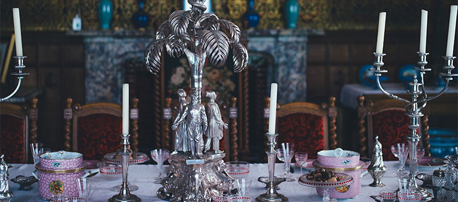

Tidak banyak film yang ku tonton tapi ini adalah beberapa film yang ku rekomendasikan untukmu!

Harry, Ron, dan Hermione berjuang menghancurkan sisa Horcrux dan mengalahkan Voldemort dalam pertempuran epik di Hogwarts, yang berakhir dengan kedamaian dunia sihir 19 tahun kemudian. Puncak cerita ini menyoroti pengorbanan Severus Snape dan keberanian Harry yang akhirnya memenangkan duel sihir, menandai berakhirnya ancaman kegelapan.
Setelah kematian ayahnya, T'Challa kembali ke Wakanda untuk naik takhta menjadi raja. Namun, posisinya ditantang oleh Erik Killmonger yang berniat mengubah kebijakan isolasi Wakanda untuk memulai revolusi global.